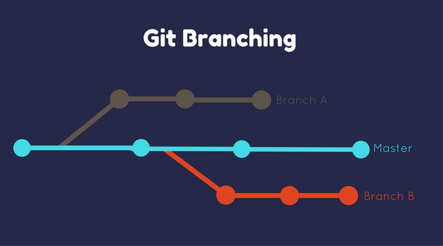

1. Control de Versiones en el Desarrollo Móvil
Definición
El control de versiones es un sistema que registra los cambios realizados en un conjunto de archivos a lo largo del tiempo, permitiendo recuperar versiones específicas en el futuro, auditar modificaciones y coordinar el trabajo colaborativo entre múltiples desarrolladores en un proyecto de software móvil.
¿Cuáles son? (Sistemas Principales)
- Git (Sistema Distribuido): Cada desarrollador posee una copia local completa del repositorio, incluyendo el historial de cambios completo.
- SVN - Subversion (Sistema Centralizado): Utiliza un único servidor central que almacena todas las versiones de los archivos; los clientes descargan solo las instantáneas actuales.
- Mercurial (Sistema Distribuido): Alternativa distribuida similar a Git, centrada en la facilidad de uso y rendimiento en repositorios grandes.
Características, Ventajas y Desventajas
- Git:
- Características: Descentralizado, soporte robusto para ramificación (branching) y fusión (merging), integridad criptográfica SHA-1.
- Ventajas: Trabajo offline total, alta velocidad, estándar de la industria (GitHub, GitLab, Bitbucket).
- Desventajas: Curva de aprendizaje empinada para principiantes.
- SVN:
- Características: Arquitectura cliente-servidor centralizada, control de versiones atómico, bloqueo de archivos opcional.
- Ventajas: Estructura conceptual sencilla, control estricto sobre permisos de directorios grandes.
- Desventajas: Dependencia crítica de la red (sin conexión no se puede commitear ni revisar historial local), fusión de ramas compleja.
Funcionamiento y Uso en Rastreo y Gestión de Cambios
Los sistemas de control de versiones operan mediante instantáneas (snapshots) o deltas de código. En el ciclo de vida de desarrollo móvil, Git gestiona el flujo mediante áreas de trabajo (Working Directory, Staging Area / Index, y Repository). Permite crear ramas experimentales (feature branches) para desarrollar componentes específicos (por ejemplo, la integración de pasarelas de pago o sensores) sin alterar la rama principal estable (`main` o `master`).

Ejemplos de Uso Práctico
Uso del comando git checkout -b feature/sensor-gps para iniciar el desarrollo aislado de la geolocalización, seguido de git commit -m "Implementación inicial de ubicación en tiempo real".
Video Explicativo Recomendado
Profundiza en los conceptos clave de este tema a través de nuestra selección audiovisual en YouTube.
▶ Ver video explicativo en YouTube